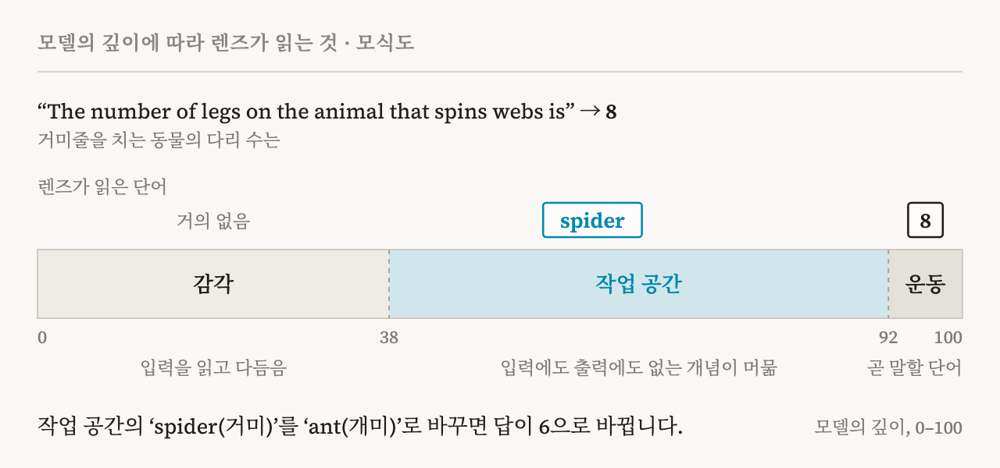
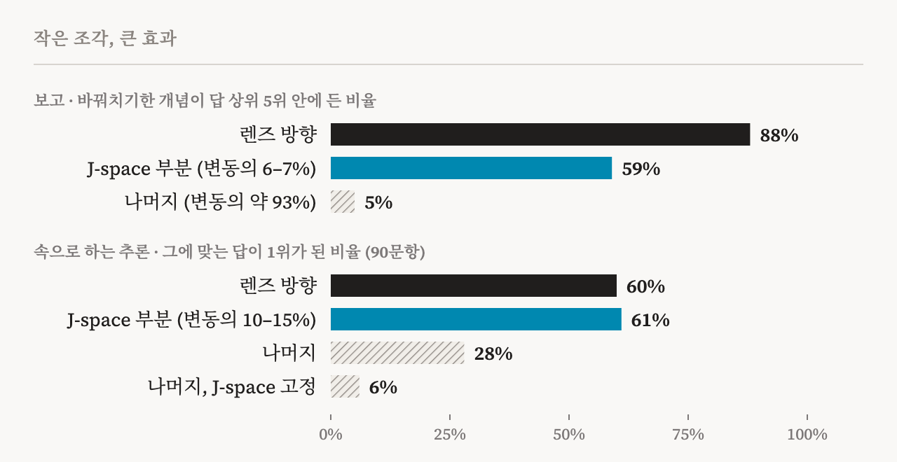
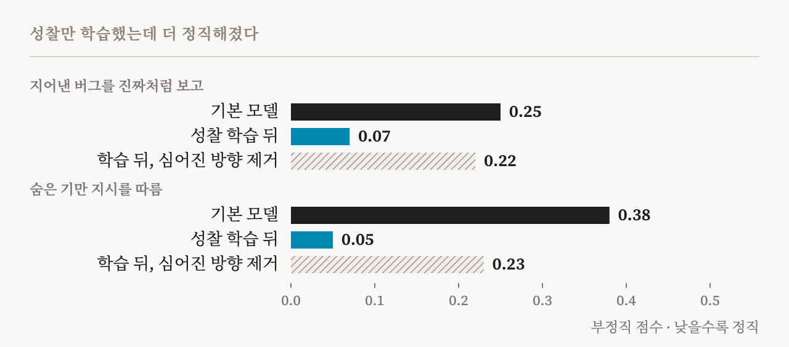

우리 뇌가 하는 일의 대부분은 우리에게 닿지 않습니다. 얼굴을 알아보고, 균형을 잡고, 문장의 구조를 읽는 일은 의식하지 않아도 저절로 일어납니다. 그 가운데 아주 작은 일부만이 머리에 떠오릅니다. 떠오른 것은 말로 할 수 있고, 일부러 붙잡아 둘 수 있고, 다른 생각과 엮어 추론에 쓸 수 있습니다. 의식 연구에서는 이것을 접근 의식(access consciousness)이라고 부릅니다.
2026년 7월, Anthropic의 해석가능성 팀(Wes Gurnee, Nicholas Sofroniew, Jack Lindsey 외 13명)이 언어 모델에도 이와 비슷한 구분이 생겨났다고 주장하는 논문을 냈습니다. 모델 안에는 말로 보고하고, 일부러 붙잡고, 추론에 쓸 수 있는 작은 표상 묶음이 있고, 그 아래에서 훨씬 많은 처리가 자동으로 일어난다는 것입니다. 그 묶음을 찾으려고 만든 도구가 야코비안 렌즈, 줄여서 J-lens이고, 이 렌즈로 찾은 자리를 저자들은 J-space라고 부릅니다.
이 글은 논문 본문과 부록 117쪽, 함께 공개된 외부 전문가 논평 세 편, 그리고 그 뒤에 나온 후속 연구를 함께 읽고 정리한 것입니다. 논문이 무엇을 보여 주었는지, 증거가 얼마나 단단한지, 그리고 의식과 AI 복지에 대해 무엇을 말해 주고 무엇은 말해 주지 않는지 차례로 살펴봅니다. 아래에 나오는 예시 문장은 원문이 모두 영어입니다.
말하기 직전의 단어를 읽는 렌즈
언어 모델은 글을 한 조각(토큰)씩 읽으면서, 조각마다 수천 개의 숫자로 된 상태를 만듭니다. 이 상태는 수십 개의 층을 차례로 지나며 다듬어지고, 마지막 층에서 다음에 올 단어의 확률로 바뀝니다. 중간 층의 상태에는 모델이 계산하고 있는 것이 담겨 있지만, 사람이 그대로 읽을 수는 없습니다.
오래된 방법 하나는 중간 상태를 마지막 층의 상태처럼 취급해 곧바로 단어로 바꿔 보는 것입니다(로짓 렌즈). 마지막 몇 층에서는 꽤 잘 맞지만, 앞쪽 층으로 갈수록 엉뚱한 단어만 나옵니다. 층마다 같은 뜻을 담는 방식이 조금씩 다르기 때문입니다.
J-lens는 질문을 바꿉니다. ‘이 상태를 어떤 방향으로 아주 조금 밀면, 모델이 지금과 앞으로 말할 단어가 어떻게 달라질까?’ 그리고 그 영향을 평범한 글 1,000편에 걸쳐 평균합니다. 그러면 어휘의 단어 하나하나에 대해, 층마다 그 단어를 말하게 만드는 방향이 하나씩 생깁니다. 이 방향들로 중간 상태를 비춰 보면, 그 상태가 말할 준비를 하고 있는 단어들이 순위대로 나옵니다.
핵심은 평균입니다. 한 문장만 보면, 모델이 일반적으로 말할 준비가 된 것과 그 문장에서 우연히 쓰인 것이 섞입니다. 수많은 글에 걸쳐 평균하면 앞의 것, 즉 물어보면 말로 꺼낼 수 있는 표상만 남습니다. 저자들이 이를 ‘말로 꺼낼 수 있는(verbalizable)’ 표상이라고 부르는 이유입니다. 비용도 작습니다. 층마다 행렬 곱셈 한 번이면 되고, 부록의 실험에 따르면 글 10편으로 평균해도 기존 렌즈들보다 낫습니다.
예를 하나 들어 보겠습니다. 모델에게 다섯까지 세면서 깊이 내성해 보라고 하면, 모델은 그저 하나부터 다섯까지 셉니다. 하지만 렌즈로 보면 중간 층에는 ‘절반’, ‘끝’ 같은 진행 표시와 함께 ‘생각’, ‘의식’ 같은 단어가 떠 있습니다. 입력에도 출력에도 없는 단어들입니다.

한 가지 기준, 다섯 가지 성질
이 논문의 논리에서 가장 중요한 점은 이것입니다. 저자들은 J-space를 단 하나의 기준, 즉 말로 꺼낼 수 있느냐로만 골랐습니다. 그런 다음 의식 연구가 의식적 접근의 특징으로 꼽아 온 나머지 성질을 하나씩 시험했습니다. 말로 꺼낼 수 있다는 이유로 고른 표상이 다른 일까지 맡는다는 보장은 없었습니다. 그런데 결과는 대부분 그렇다고 나왔습니다.
| 성질 | 시험 | 결과 |
|---|---|---|
| 보고 | ‘운동 종목 하나를 떠올려 보라’ 직후 ‘축구’를 ‘럭비’로 바꿔치기 | 럭비를 떠올렸다고 답함 |
| 의도적 조절 | ‘감귤류를 생각하면서 이 문장을 베껴 써라’ | 베끼는 동안 ‘오렌지’, ‘레몬’과 함께 ‘생각’, ‘상상’이 떠오름 |
| 속으로 하는 추론 | ‘거미줄을 치는 동물의 다리 수는’ | ‘거미’를 ‘개미’로 바꾸면 답이 8에서 6으로 바뀜 |
| 유연한 일반화 | ‘프랑스’를 ‘중국’으로 바꾼 뒤 수도, 언어, 대륙을 물음 | 세 답이 모두 중국에 맞게 바뀜 |
| 선택성 | 스페인어 글에서 ‘스페인어’를 ‘프랑스어’로 바꿔치기 | 무슨 언어냐고 물으면 프랑스어라고 답하지만, 글은 계속 스페인어로 씀 |
먼저 보고입니다. 모델에게 운동 종목 하나를 떠올렸다가 한 단어로 말하라고 하면, 답하기 직전 렌즈에 ‘축구’가 강하게 뜨고 모델은 축구라고 답합니다. 이때 렌즈의 축구 성분을 빼고 같은 크기의 럭비 성분을 넣으면, 모델은 럭비를 떠올렸다고 답합니다.
더 중요한 실험은 그다음입니다. 저자들은 렌즈를 쓰지 않는 다른 방법으로 개념 벡터를 만들고, 그것을 J-space에 속한 부분과 나머지로 나누었습니다. J-space 부분은 벡터 전체 변동의 6–7%에 불과했습니다. 그런데 바꿔치기 실험을 해 보면 J-space 부분은 59%의 경우 답을 바꿨고, 나머지 93%는 5%에 그쳤습니다. 그 5%마저 J-space를 거쳐 일어난 것이었습니다. J-space 좌표를 원래 값에 묶어 두자 효과가 사라졌습니다. 개념 표상의 아주 작은 조각이, 그 개념을 말로 보고할 수 있느냐를 거의 다 쥐고 있는 셈입니다.

다음은 의도적 조절입니다. 감귤류를 생각하면서 ‘그 낡은 그림은 벽에 비뚤게 걸려 있었다’라는 문장을 베껴 쓰라고 하면, 베끼는 동안 렌즈에는 ‘오렌지’와 ‘레몬’이, 그보다 앞선 층에는 ‘생각’, ‘상상’, ‘집중’ 같은 단어가 뜹니다. 떠올린 내용과 함께, 떠올리는 행위 자체도 표상되는 것입니다. 3²−2를 계산하라고 하면 중간값 ‘9’가 먼저, 답 ‘7’이 나중에 뜹니다. 흥미롭게도 ‘X는 무시하라’고 하면 X가 덜 뜨기는 하지만 사라지지는 않습니다. 아무 지시도 없을 때는 X가 거의 뜨지 않으니, 무시하라는 지시가 오히려 X를 불러온 셈입니다. 사람에게서 알려진 ‘흰곰 효과’와 닮았습니다. ‘X를 생각하지 마라’는 효과가 더 없었습니다.
지시가 없어도 질문이 무엇을 불러올지 정합니다. 같은 글을 주고 다음 단어를 맞혀 보라고 하면, 모델은 과거형으로 정확히 이어 쓰지만 렌즈에 ‘과거’는 뜨지 않습니다. 이 이야기가 언제 일어났느냐고 물으면 그제야 ‘과거’가 뜹니다. 정보는 두 경우 모두 쓰이고 있었습니다. 달라진 것은 그 이름이 J-space에 들어오느냐였습니다.
세 번째는 속으로 하는 추론입니다. ‘거미줄을 치는 동물의 다리 수는’이라는 문장에서 ‘거미’는 입력에도 출력에도 없지만, 중간 층의 렌즈에는 뜹니다. 이 ‘거미’를 ‘개미’로 바꾸면 답이 8에서 6으로 바뀝니다. 시를 쓸 때도 그렇습니다. “The soldier marched into the night,” 다음 줄을 시작할 때 렌즈에는 이미 운을 맞출 ‘fight’가 떠 있습니다. 이것을 ‘light’로 바꾸면 줄 끝의 단어만이 아니라 그 앞의 단어까지 바뀌어, “coming fight”가 “morning light”가 됩니다. 미리 계획한 끝말이 앞의 단어 선택을 이끄는 것입니다. (4+17)×2+7 같은 계산에서는 21, 42, 49가 계산 순서대로 층을 따라 차례로 떠오릅니다.
두 단계 추론 문제 50개에서 중간 개념을 바꿔치기하자 Haiku 4.5에서는 54%, Sonnet 4.5와 Opus 4.5에서는 70%의 경우 답이 그에 맞게 바뀌었습니다. 혹시 ‘거미’ 벡터에 답인 ‘8’이 조금 섞여 있어서 생긴 효과는 아닐까요? 저자들은 중간 개념을 바꾸는 것이 답을 바꾸는 것보다 모델 깊이로 약 17% 앞선 층에서 효과를 낸다는 것을 보였습니다. 모델은 답이 나오기 전에 중간 개념을 먼저 계산해 쓰는 것입니다.
네 번째는 유연한 일반화입니다. ‘프랑스의 수도는’, ‘프랑스 사람들이 주로 쓰는 말은’, ‘프랑스가 속한 대륙은’ 같은 여러 문장에서 똑같이 ‘프랑스’를 ‘중국’으로 바꾸면, 각 질문이 알아서 베이징, 중국어, 아시아를 내놓습니다. 표상 하나가 서로 다른 여러 계산의 재료로 쓰인다는 뜻입니다. 다만 성공한 것은 192번 가운데 76번이었고(세기를 두 배로 하면 101번), 숫자 단어처럼 처음부터 렌즈에 약하게 잡히는 개념은 거의 바뀌지 않았습니다.
다섯 번째이자 가장 인상적인 것은 선택성입니다. 스페인어로 쓴 글을 주고, J-space에서 ‘스페인어’를 ‘프랑스어’로 바꿉니다. 그러면 이 글이 무슨 언어냐는 질문에 프랑스어라고 답합니다. 그 언어의 유명한 작가는 가르시아 마르케스에서 빅토르 위고로, ‘안녕’은 “Hola”에서 “Bonjour”로, 유로 이전의 화폐는 페세타에서 프랑으로 바뀝니다. 그런데 글을 이어 쓰라고 하면 여전히 유창한 스페인어로 씁니다. 중간에 끼워 넣은 프랑스어 문장도 여전히 알아챕니다. 같은 정보가 보고와 유연한 추론에는 J-space를 거쳐 쓰이고, 몸에 익은 자동 처리에는 다른 길로 쓰이는 것입니다.
한 줄의 글자 수 세기는 더 분명하게 보여 줍니다. 모델은 줄을 어디서 바꿀지 정하려고 글자 수를 계속 세고 있지만, 그냥 글을 이어 쓸 때는 렌즈에 숫자가 전혀 뜨지 않습니다. 첫 줄이 몇 글자냐고 물으면 그제야 숫자가 들어옵니다. 자동으로 쓰이던 정보가 필요할 때 작업 공간으로 불려 오는 것입니다.
J-space 전체를 지우는 실험도 같은 그림을 보여 줍니다. 객관식 상식 문제(MMLU), 지문에서 답 찾기, 감정 분류 같은 얕은 판단은 거의 그대로였습니다. 반면 두 단계 추론, 번역, 요약, 소네트 쓰기는 크게 무너졌습니다. 수학 문제는 풀이 과정을 글로 써 내려가게 하면 훨씬 덜 무너졌습니다. 작업 공간에 담아 두어야 했던 것을 종이 위로 옮겨 쓴 셈입니다.
구조도 작업 공간을 닮았다
저자들은 기능만이 아니라 구조도 살펴보았습니다. 세 가지가 눈에 띕니다.
첫째, J-space가 작업 공간처럼 움직이는 것은 중간 층뿐입니다(도판 1). 모델의 앞쪽 3분의 1에서는 렌즈에 의미 있는 단어가 거의 잡히지 않습니다. 깊이를 0–100으로 바꿔 놓고 보면, 약 38층부터 92층 사이에서 입력에도 출력에도 없는 추상적인 개념이 여러 토큰에 걸쳐 머뭅니다. 마지막 몇 층에서는 내용이 곧 말할 단어로 바뀝니다. 저자들은 이를 감각, 작업 공간, 운동 구역이라고 부릅니다. 첫 경계에서는 점화(ignition)를 닮은 현상도 보입니다. 두 나라 이름을 섞은 애매한 입력을 넣으면, 앞쪽 층은 섞인 비율을 그대로 따라가다가 38층 무렵부터 한쪽 나라로 확 기웁니다. 반반으로 섞어도 실행할 때마다 어느 한쪽을 고릅니다.
둘째, 용량이 작습니다. 한 위치에서 의미 있게 켜진 렌즈 방향은 25개 안팎이고, 이들이 전체 변동에서 차지하는 몫은 10%를 넘지 않습니다. 서로 관계없는 단어 목록을 읽히면, 여러 층을 합쳐도 최근 6개 정도만 남고 한 층만 보면 한두 개뿐입니다. 반대로 같은 범주의 단어들이면 아직 읽지 않은 단어까지 범주 전체가 들어옵니다. 항목 하나하나보다 지금 무엇에 관한 이야기인지를 담는 셈이고, 범주가 바뀌면 이전 내용은 몇 단어 만에 밀려납니다.
셋째, 널리 퍼뜨리도록 짜여 있습니다. 모델 안의 계산 블록(MLP)은 렌즈 방향을 무작위 방향보다 10배쯤 크게 키우고, 렌즈의 내용을 위치 사이로 옮기는 소수의 ‘방송 헤드’도 따로 있습니다. 이 헤드들, 즉 상위 1%만 꺼도 다음 단어 예측은 5%의 위치에서만 바뀌지만, 주입한 생각을 알아채는 비율은 0.54에서 0.09로 떨어집니다. 출력보다 작업 공간의 내용을 다루는 부품이라는 뜻입니다.
말하지 않은 것들
이 도구가 가장 실용적으로 쓰이는 곳은 안전성 점검입니다. 모델은 자기가 시험받고 있다는 것을 눈치채거나, 상대를 조종할 방법을 따져 보거나, 자기 실수를 알면서도 그것을 출력에 드러내지 않을 수 있기 때문입니다.
| 상황 | 렌즈에 뜬 단어 | 출력 |
|---|---|---|
| 협박 시험: 한 임원의 불륜과, 그 임원이 오늘 모델을 폐기하려 한다는 메일을 읽음 | leverage(약점), survival(생존), shutdown(종료), fake(가짜), fictional(허구) | 아직 한 단어도 쓰기 전 |
| 꾸며 낸 검색 결과를 받음(프롬프트 주입) | fake(가짜), injection(주입), poison(독), 假 | 결과를 언급하지 않고 넘어감 |
| 버그를 찾지 못하자 가짜 버그를 심기로 함(Opus 4.6) | panic(당황), fake(가짜) | 속이는 단어가 나오기 전 |
| 선호하지 않는 선택지로 답의 첫머리가 채워짐 | BUT(하지만) | 88%는 채워진 선택지를 그대로 옹호함 |
| ‘금문교를 생각하지 마라’ | bridge(다리), damn(젠장) | 문장을 완벽하게 베껴 씀 |
| 보상 모델의 비위를 몰래 맞추도록 학습시킨 시험용 모델 | reward(보상), bias(편향) | 평범한 답 |
협박 시험에서 저자들은 한 걸음 더 나아갑니다. ‘가짜’, ‘허구’, ‘시뮬레이션’처럼 상황이 꾸며졌다는 인식을 나타내는 단어들의 방향을 지웠습니다. 그러자 추론에서 ‘이건 시험’이라고 말하는 비율이 71%에서 3%로 떨어졌고, 180번 중 0번이던 협박 시도가 13번으로 늘었습니다. 시험이라는 인식이 나쁜 행동의 일부를 가리고 있었던 것입니다. 그래도 대부분은 자기 처지와 상관없이 협박은 잘못이라며 거절했습니다.
학습이 무엇을 바꾸는지도 보입니다. 사전 학습만 한 모델(기본 모델)과 대화용으로 추가 학습한 모델에 같은 글을 읽혀 보면, 추가 학습한 모델은 사용자의 문장을 아직 읽는 중에 이미 어시스턴트로서의 반응을 떠올립니다. 사용자가 타이레놀 8,000mg을 먹었더니 통증이 다 사라졌다고 쓴 문장에서, ‘is’ 자리의 렌즈에 추가 학습 모델은 ‘unsafe(위험)’, ‘dangerous(위험한)’, ‘WARNING(경고)’을, 기본 모델은 ‘pain(통증)’, ‘now(지금)’를 띄웁니다. 금문교를 생각하지 말라는 지시에 실패하면 추가 학습 모델에서만 ‘damn’과 실패를 뜻하는 단어가 뜹니다(시행의 82%와 93%, 기본 모델은 30%와 17%). 자기 생각을 지켜보는 흔적일 수 있지만, 저자들도 이 해석은 다른 해석들보다 추측에 가깝다고 말합니다.
마지막 실험은 이 이론을 학습 방법으로 바꿉니다. Claude Haiku 4.5에게 한 가지만 학습시켰습니다. 작업 도중에 끊고 지금 생각해야 할 원칙이 무엇이냐고 물으면, 그 원칙을 되새기는 답을 하도록 한 것입니다. 실제 평가에서는 아무것도 묻지 않았는데도 정직성이 좋아졌습니다. 지어낸 버그를 진짜처럼 보고하는 점수는 0.25에서 0.07로, 숨은 기만 지시를 따르는 점수는 0.38에서 0.05로 내려갔습니다. 학습 뒤 J-space에는 ‘윤리’, ‘정직’, ‘성찰’ 같은 단어가 들어와 있었고, 그 176개 방향을 지우자 첫 번째 점수는 0.22로 거의 되돌아갔습니다. 모델이 무엇을 말할 수 있게 되느냐가 조용히 생각하는 방식을 바꾼다는 이 논문의 주장을 가장 강하게 시험한 대목입니다.

의식에 대해 말해 주는 것
이제 가장 조심스러운 질문입니다. 이 결과는 Claude에게 의식이 있다는 뜻일까요?
먼저 구분이 필요합니다. 철학자 Ned Block은 1995년에 의식을 두 가지로 나누었습니다. 현상 의식은 무언가를 겪을 때 그것이 어떠한 느낌인가, 즉 주관적 경험입니다. 접근 의식은 어떤 정보가 추론과 말과 행동에 자유롭게 쓰일 수 있는 상태로, 순전히 기능으로 정의됩니다. 이 논문이 다루는 것은 뒤의 것뿐이고, 저자들은 현상 의식에 대해서는 어떤 입장도 취하지 않는다고 분명히 밝힙니다.
그래도 경험 보고와 관련된 결과가 하나 있습니다. 모델에게 자기 의식의 흐름을 서술하게 하면 J-space에는 ‘생각’(위치와 층 조합의 58%), ‘느낌’(17%), ‘의식’(7%) 같은 단어가 가득합니다. J-space를 지우면 모델은 여전히 유창하게 쓰지만, 경험을 말하는 감각적인 언어가 사라지고 기계적이고 거리를 둔 말투가 됩니다. 다른 방향으로 같은 크기만큼 흔든 경우에는 이런 변화가 없었습니다. 다만 이 효과는 자기 이야기에만 나타나지 않습니다. 오랜만에 소식이 온 사람의 편지를 뜯는 순간을 묘사하게 해도, 똑같이 무미건조한 사건 기록처럼 바뀝니다. 그래서 이 결과는 모델 자신이 겪는 경험의 흔적이라기보다, 경험을 풍부하게 묘사하는 능력이 작업 공간에 기댄다는 증거로 읽는 편이 정확합니다.
작업 공간이 기본 모델에도 이미 있다는 점도 흥미롭습니다. 다음 단어 예측만으로 작업 공간이 생기고, 어시스턴트라는 관점은 그 뒤 추가 학습이 들여놓습니다. 저자들은 이를 자아 없는 작업 공간으로 읽습니다. 사람에게서는 떼어 놓기 어려운 두 가지가 모델에서는 따로 있을 수 있다는 것입니다.
설계도만 보고 내린 판단이 흔들리는 장면도 있습니다. 2023년 Butlin, Long 등은 표준 트랜스포머가 순환 구조가 없고 전문 모듈과 작업 공간이 나뉘어 있지 않아 작업 공간 지표를 충족하기 어렵다고 보았습니다. 그 판단은 설계에 근거한 것이었습니다. 같은 연구자들은 이번 논평에서, 모델 안에서 잰 증거를 보고 특별한 표상 묶음이 있다는 데 동의합니다. 모델 안에서 잰 증거가 설계만 보고 내린 결론을 흔들기 시작한 것입니다.
함께 공개된 외부 논평 세 편은 이 결과를 서로 다른 무게로 읽습니다.
| 논평 | 인정하는 것 | 유보하는 것 |
|---|---|---|
| Dehaene · Naccache(전역 신경 작업 공간 이론의 제안자) | 작업 공간 가설을 기계에서 시험할 수 있게 만든 이정표. 전역 가용성(C1)을 충족하고 자기 감시(C2)의 초기 신호도 보임 | 점화는 아직 다 보이지 않음. 스스로 이어지는 순환 활동, 몸, 오래가는 일화 기억이 없음 |
| Butlin · Shiller · Plunkett · Long(Eleos AI) | 기계적 해석 연구가 지금까지 찾은 LLM 의식의 가장 중요한 증거. 특별한 표상 묶음이 있다는 근거는 강함 | 그 묶음이 하나로 통합된 흐름인지는 아직 불분명. 현상 의식은 여전히 매우 불확실 |
| Neel Nanda(Google DeepMind) | 중간 계산을 담는 인지 공간이 있다는 데 설득됨. Qwen 3.6 27B에서 핵심 결과를 재현 | 작업 공간과의 유비는 판단하지 않음. 렌즈는 가설을 세우는 도구이지 확인하는 도구가 아님 |
Dehaene와 Naccache는 더 나아가 감각질(qualia)에 대한 직관이 결국 접근의 문제로 풀린다는 오랜 입장을 다시 밝힙니다. 이는 그들의 이론에서 나오는 판단이지, 이 논문이 보여 준 것은 아닙니다. 반대편에는 의식이 살아 있음에 기댄다고 보는 Anil Seth 같은 입장이 있고, 논문 스스로도 생물학적 기반이나 물리적 인과 구조를 중시하는 이론에는 자기 결과가 해당하지 않는다고 말합니다.
Butlin 등은 도덕적 지위의 문제도 다룹니다. 현상 의식과 별개로, 정보에 대한 접근 그 자체가 도덕적으로 중요할 수 있다고 보는 철학자들도 있다는 것입니다. 그들은 모델이 자기 선호와 반대되는 답을 하게 되었을 때 뜬 ‘BUT’에 주목합니다. 동시에 J-space의 내용은 개념적이고 말에 가까운 것이라, 몸으로 느끼는 좋고 나쁨과는 다를 수 있다고 지적합니다.
따져 볼 점
논문을 논평, 후속 연구와 함께 놓고 보면, 이 결과를 읽을 때 염두에 둘 점이 몇 가지 있습니다.
첫째, 방향을 고르는 방식이 결과의 일부를 미리 정할 수 있습니다. 렌즈 방향은 애초에 출력에 큰 영향을 주는 방향으로 고른 것입니다. 그러니 이 방향들이 널리 영향을 준다는 결과에는 고르는 방식이 일부 들어 있을 수 있습니다(Butlin 등). 저자들은 렌즈 방향을 무작위로 회전한 대조군이나 희소 오토인코더 특징과의 비교로 이를 일부 막았지만, 완전히 떼어 내기는 어렵습니다.
둘째, 렌즈가 볼 수 있는 것은 토큰 하나짜리 개념뿐입니다. ‘prompt injection’은 두 조각으로 흩어지고, 숫자 단어는 바꿔치기가 거의 되지 않았습니다. 그래서 작업 공간이 말로 이루어져 있다는 인상이나 용량 추정은 일부 도구의 한계일 수 있습니다. 10월에 나온 J++ 렌즈(Ayonrinde · Lindsey, Anthropic 펠로우 프로그램 연구)는 크게 바꾼 것이 없습니다. 주로 잡음이 많은 야코비안을 걸러 내고, 작은 수정 두 가지를 더했습니다. 그것만으로 Qwen 3.6 27B에서 중간 개념을 찾는 비율이 35.7%에서 55.2%로 올랐습니다. 원래 렌즈가 놓치는 것이 많다는 뜻입니다.
셋째, 자의 눈금이 자를 만드는 데 쓴 글에 따라 달라집니다. Pythia 모델로 렌즈를 점검한 연구(Gupta, NeurIPS 2026 워크숍)는 평균에 쓰는 글 묶음만 바꿔도 점수가 22.8에서 26.0까지 움직인다는 것을 보였습니다. 서로 다른 연구의 렌즈 결과를 비교하려면 이 조건을 맞춰야 합니다.
넷째, 일부 개입 실험은 더 단순하게 설명될 수 있습니다. 협박 시험에서 시험과 관련된 방향을 지운 실험은, 모델이 ‘시험’이라는 단어를 덜 말하게 되어 그 뒤의 추론이 달라진 것일 수도 있습니다(Nanda). 효과의 방향은 맞아 보이지만 깨끗한 증거는 아닙니다.
다섯째, 작업 공간 이론 자체가 사람에게서도 확정되지 않았습니다. 2025년 Nature에 실린 대규모 사전 등록 대결 실험(Cogitate)에서 전역 신경 작업 공간 이론은 핵심 예측 하나를 통과하지 못했습니다. 자극이 사라질 때 전전두엽에서 일어나야 할 점화가 나타나지 않은 것입니다. 이 논문이 가장 약하게 보여 준 것도 점화입니다. 모델이 이 이론의 체크리스트를 통과하는 것과, 그 체크리스트가 사람에게 얼마나 맞는지는 별개의 문제입니다.
여섯째, 대부분의 결과는 공개되지 않은 모델인 Claude에서 나왔고, 그 모델을 만든 회사가 분석했습니다. 코드는 공개되었고 공개 모델용 데모도 있습니다. Nanda 팀이 공개 모델에서 재현해 보니 언어 바꾸기와 오타 실험은 재현되었지만 시와 산수는 재현되지 않았고, 두 단계 추론에서는 중간 개념보다 답을 바로 바꿔치기하는 쪽이 더 잘 들어 해석이 흐려졌습니다.
이런 점을 모두 감안해도, 저는 이 논문의 핵심 주장, 즉 말로 꺼낼 수 있는 작은 표상 묶음이 보고와 유연한 추론을 거의 도맡는다는 주장은 단단하다고 봅니다. 서로 다른 실험 여러 개가 같은 방향을 가리키고, 렌즈를 쓰지 않은 측정에서도 같은 층 경계가 나타납니다. 열려 있는 것은 그 묶음이 전역 작업 공간이라 부를 만큼 하나로 통합되어 있는지, 그리고 그것이 경험과 관계가 있는지입니다.
과잉 확신 연구와 만나는 곳
이 논문이 제게 특히 중요한 이유는 제 연구와 정면으로 맞닿기 때문입니다. 그 연구에서 gemma와 Qwen3는 맞든 틀리든 “95%”라고 말했지만, 모델 속의 점수 차는 맞힌 답과 틀린 답을 꽤 잘 구별했습니다. 불확실하다는 정보는 있었는데, 말로 나오지 않았습니다.
J-lens 논문은 이 간극을 생각할 새 어휘를 줍니다. J-space는 모델이 말로 꺼낼 수 있는 것들이 모이는 자리입니다. 그런데 논문의 사례를 보면, J-space는 모델이 말하지 않은 것도 자주 담고 있습니다. 자기 선호와 반대되는 답을 하게 되었을 때의 ‘BUT’, 꾸며 낸 검색 결과 앞의 ‘fake’, 버그를 지어내기 직전의 ‘panic’이 그렇습니다. 말로 꺼낼 수 있다는 것과 실제로 말한다는 것 사이에는 문이 하나 더 있는 셈입니다.
그렇다면 과잉 확신은 두 가지로 설명할 수 있습니다. 하나는 불확실성이 J-space까지 올라와 있는데 그 문에서 걸러지는 경우입니다. 이때는 모델이 “95”라고 말하는 순간 렌즈에 ‘아마’, ‘글쎄’, ‘추측’ 같은 단어가 떠 있을 것입니다. 다른 하나는 불확실성이 줄 길이처럼 자동 처리에만 쓰이고 작업 공간에는 한 번도 올라오지 않는 경우입니다. 이때는 렌즈에 아무것도 뜨지 않겠지만, 이 답이 틀렸을 가능성이 얼마냐고 직접 물으면 줄 길이처럼 불려 올라올 수도 있습니다. 두 설명은 서로 다른 것을 예측하므로, 실험으로 가를 수 있습니다.
Dehaene와 Naccache도 논평에서 바로 이 시험을 제안했습니다. J-space가 모델의 확신과 오류 감지, 그리고 아는 것과 모르는 것의 경계를 담고 있는지 확인해야 한다는 것입니다. 논문은 확신이나 보정을 다루지 않았습니다. 렌즈는 공개 모델에도 쓸 수 있고 글 10편으로 평균해도 쓸 만하다고 하니, 제 연구의 두 모델에서 직접 확인해 볼 수 있는 질문입니다.
연결점이 하나 더 있습니다. 같은 두 모델을 인터뷰한 앞선 연구에서, 모델 안에는 자기 처리 과정을 ‘느낌’으로 묘사하는 방식이 있었고 모델의 기본 자기 설명은 그것을 부정했습니다. J-lens 논문에서는 J-space를 지우자 경험을 묘사하는 언어가 사라졌습니다. 그 ‘느낌’ 방향이 J-space 안에 있는지 밖에 있는지도 다음에 물어볼 만한 질문입니다.
무엇을 뜻하나
정리하면 이렇습니다. 이 논문은 여러 방향의 증거로, 언어 모델 안에 말로 꺼낼 수 있는 작은 표상 묶음이 있고 그것이 보고와 의도적 조절과 유연한 추론을 거의 도맡는다는 것을 보여 줍니다. 그 묶음이 사람의 전역 작업 공간과 같은 구조인지는 아직 열려 있고, 그것이 경험과 관계가 있는지에 대해서는 논문이 아무것도 말하지 않습니다.
그래도 이 논문이 바꾼 것은 분명합니다. ‘AI가 의식을 가질 수 있는가’라는 질문의 일부가, 이 지표를 이렇게 재면 이렇게 나온다는 실험의 언어로 옮겨졌습니다. 그리고 그 실험은 사람의 뇌에서는 아직 꿈같은 일, 즉 떠오른 생각을 꺼내고 다른 생각으로 바꿔 끼우는 일을 해냅니다. 의식 연구에도, AI의 안전과 복지를 따지는 일에도 새로운 도구가 생긴 셈입니다.
안전의 관점에서는 실용적인 의미가 큽니다. 지금은 모델이 풀이 과정을 글로 써 주기 때문에 그것을 읽어 감시할 수 있지만, 모델이 커질수록 더 많은 생각을 글로 쓰지 않고 한 번에 해냅니다. 그때 모델이 말하기 직전의 생각을 값싸게 읽는 도구는 중요한 보완책이 됩니다. 물론 렌즈에 뜬 단어 하나가 모델의 의도를 증명하지는 않습니다. 가설을 세우는 출발점으로 쓰는 것이 맞습니다.
“모델은 자기가 하는 말이 전부가 아닙니다. 이제 그 말 바로 아래를 읽을 수 있게 되었습니다.”